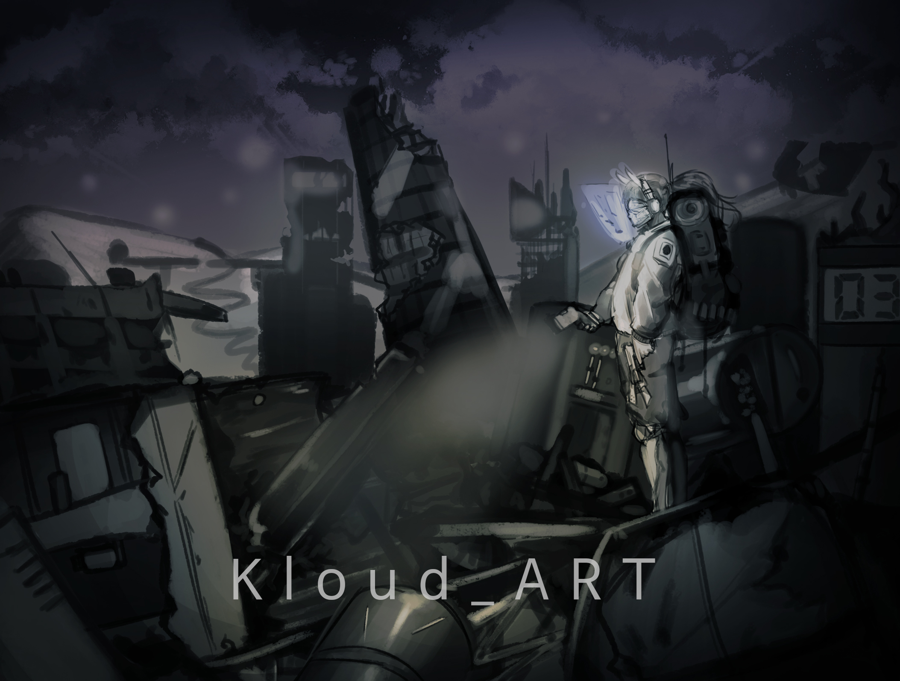
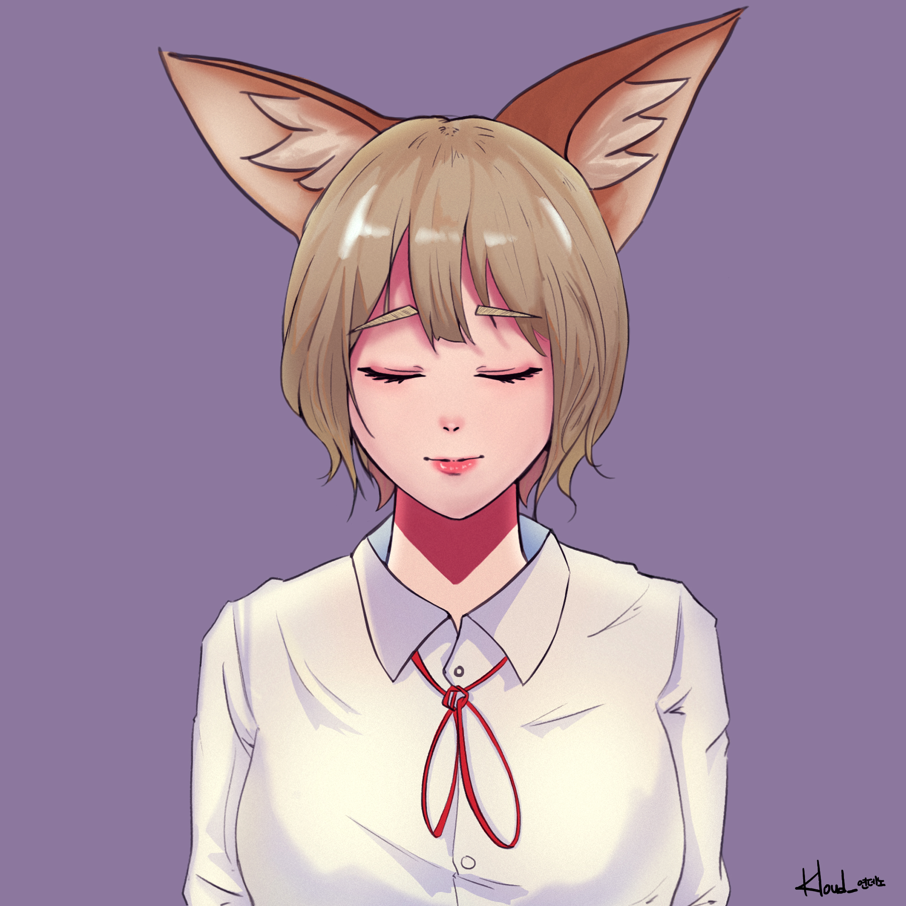
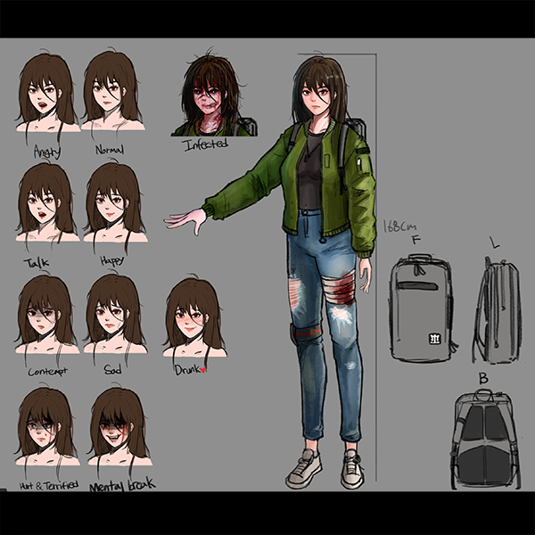
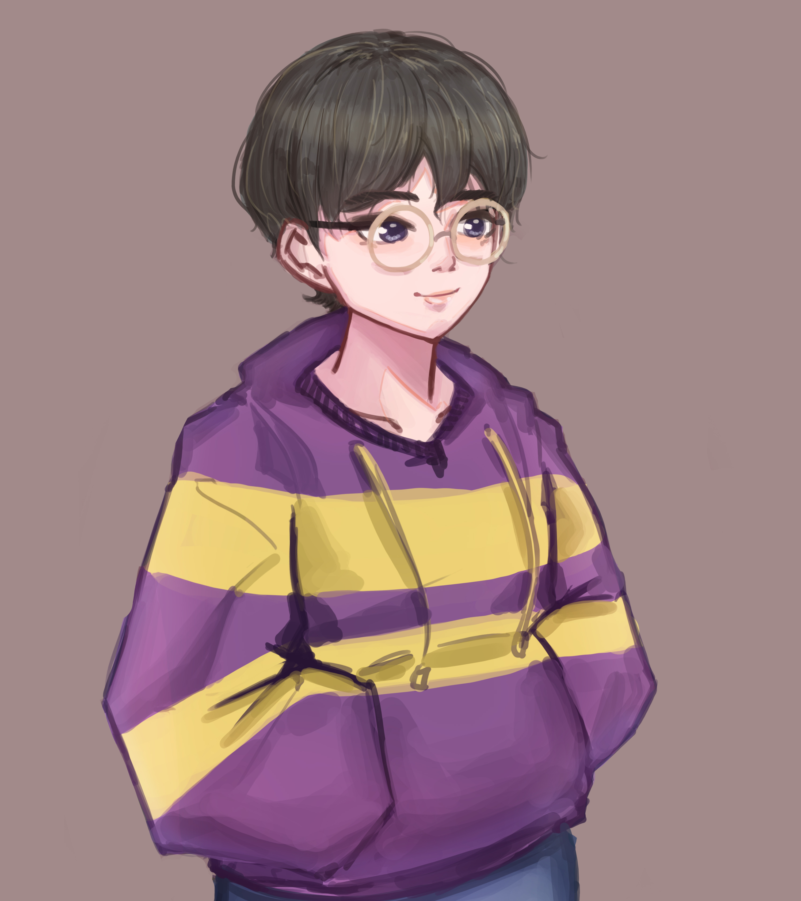

Welcome :D
(Draw by)
Yeon
- 
- 
- 

- 
"그림 그리는 방법을 배운다는 것은 사물을 정확히 보는 방법을 배운다는 것과 같다.
그것은 단지 눈으로 보는 그 이상의 의미가 있다."
-키몬 클레이즈(kimon nicolaides)
ILLUSTRATOR/ARTIST
안녕하세요 여러분.
저는 그림을 그리는 것을 좋아해서 그런지, 진로나 취미 또한 그림이 관련된 것들이 많아요.
그림 안의 사람들의 마음을 움직일 수 있는 메세지나 이야기들을 남들에게도 전하고 싶고,
이런 감정들을 함께 공유하고, 함께 만들어 가고 싶어요.
저에게 그림은 늘 함께 붙어 있는 동반자이고, 유용한 도구라고 생각돼요.
무언가를 상상하고, 생각하는 사람들에게 표현 할 수 있는 수단이라면 뭐든간에 관심이 갈 것 같아요.
우리가 예술을 찾고, 좋아하는 이유 중 하나는. 머릿속에 있던 생각을 내 눈으로 볼 수 있다는 큰 이유가 있기 때문인 것 같아요.
눈을 감고 상상해 보세요. 어떤 것이라도 좋아요. 정령들이 사는 거대한 숲이던... 네온사인과 여러 기계들이 있는 사이버펑크 도시건...
상상을 하면서 조금씩 흥미롭고, 내 눈으로 바라보고 싶다는 생각이 조금이라도 들거에요.
그래서 저는 그 중 하나인 그림을 택했고, 그것이 저를 제일 잘 표현 할 수 있는 수단이라고 생각 했어요.
여러분들이 상상하는 나만의 세계는 어떤 곳인가요? 그리고 그걸 어떻게 보여주고 싶으신가요?
듣지 못해도, 보지 못했더라도, 분명히 정말 개성있고, 멋진 세계일 것 같아요.
저는 그림을 그리는 사람들이 많고, 다른 이의 상상들이 사람의 마음을 움직이게 하는 이 세상이
너무나 즐겁고 아름답습니다. 우리가 알지는 못해도 참신한 상상들은 아직 이 세상에 많을테니까요.
Please don't use my artwork without my permission.
Copyright© 2020 . YeonDeano . all rights reserved.